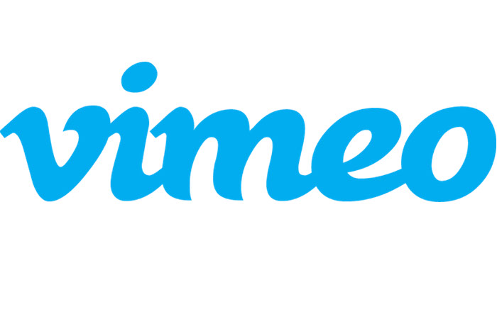

モーダルウィンドウ ライブラリ Modaal 使用例
Modaal は、WCAG 2.0 Level AAのアクセシブルなモーダル・ウィンドウ・プラグインです。 なぜ他のモーダル・プラグインなのか？ 品質、柔軟性、アクセシビリティを適切に組み合わせたプラグインを見つけるのは難しいことです。私たちは、様々なプロジェクトで使えるものを開発し、アクセシブルなウェブの実現を促進することができれば面白いと思いました。
インライン（基本）
ページ内の既存の要素（IDを使用）からコンテンツを取得し、コンテンツに読み込みます。
Inlineフルスクリーン
Fullscreenフルスクリーンモードでは、Modaalウィンドウがビューポート全体に広がるように開きます。コンテンツがウィンドウの高さを超える場合は、ダイアログが垂直方向にスクロールし、すべてのコンテンツにアクセスできるようになります。
画像(一枚)
1枚の画像を開きます。開いた画像の下にラベルを表示したり、data-modaal-desc="My Image Description "を使ってアクセス可能なラベルを表示することもできます。
画像ギャラリー(複数枚)
data-group="group-name "属性でリンクされた一連の画像を開きます。group-nameは、あなたのギャラリーグループの識別子に置き換えてください。
{kind=link}
{kind=link}
{kind=link}
{kind=link}
{kind=link}
{kind=link}
{kind=link}
動画
YouTube
リンクのhref属性で指定された埋め込み動画をiframeに読み込みます。現在テストされているフォーマットは、YoutubeとVimeoです。その他、iframeでの埋め込みに対応しているものも動作するはずです。
Modaalのビデオタイプは、VimeoとYoutubeの両方で徹底的にテストされています。最良の結果を得るためには、URLフォーマットが以下のようになっていることを確認してください。私たちはこのURLをiframeに移植し、そこから各サービスプロバイダーが必要な再生をすべてコントロールします。
https://www.youtube.com/embed/cBJyo0tgLnw、最後のIDはあなたのユニークなビデオIDです。これは、youtubeの動画で「共有」を選択し、「埋め込み」をクリックすると表示されます。提示されたコンテンツの中にこのURLがあります。
Vimeo
https://player.vimeo.com/video/109626219、最後のIDはお客様固有のビデオIDです。これは、vimeoの動画で「共有」を選択し（一般的に右側に表示されます）、「埋め込み」内のコンテンツを選択することで確認できます。埋め込みコードの一番最初にあるsrc=""の中に必要なURLがあります。
iframeで、他のウェブサイトの内容を開く
リンクのhref属性で定義されたURLを、iframeに読み込みます。このためには、モーダルの幅と高さも設定する必要があります。
iframe確認画面
ユーザーに特定のアクションの「確認」または「取消」を促すモーダルなウィンドウ。必要に応じて、コールバックイベントを含むコンテンツをプッシュすることができます。デフォルトでは、一度開くと、アクション（確認／取消など）が選択されるまで閉じることができません。
confirm